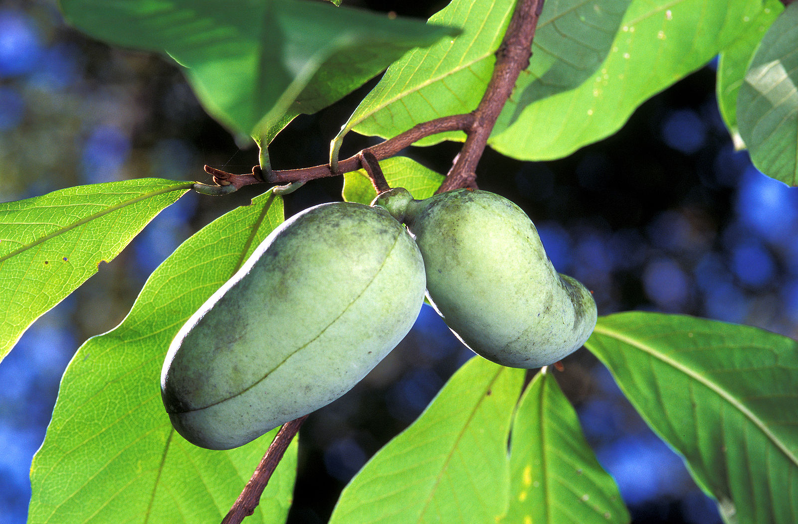
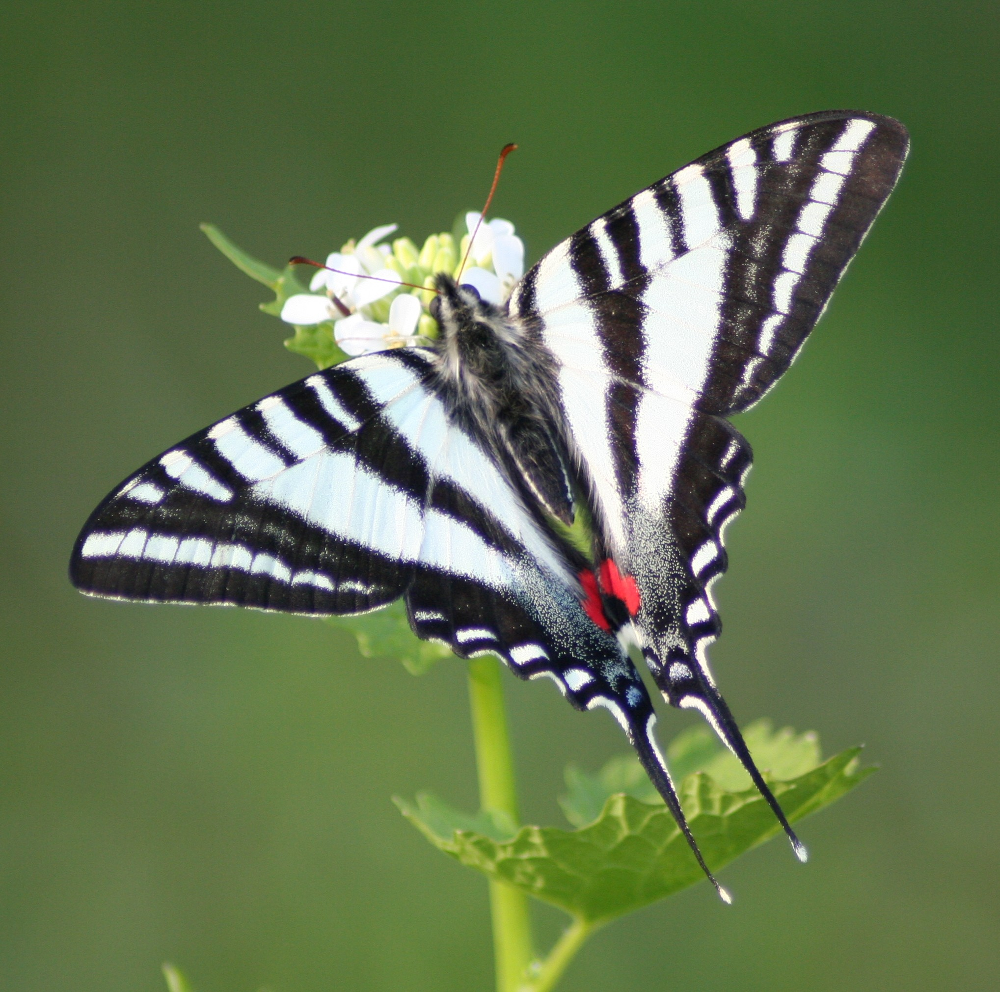

Asimina triloba, or the pawpaw tree, is a native fruit tree once abundant in Pittsburgh’s forests and river valleys. Producing custard-like fruit with a tropical flavor, the pawpaw has been a valuable food source for both wildlife and humans. However, industrialization and urban development have greatly reduced its numbers, leaving isolated patches that struggle to reproduce naturally.
Before European settlement, pawpaw trees thrived in the rich, moist soils of Pittsburgh’s river valleys and lowland forests. Indigenous peoples cultivated and consumed pawpaw fruit, spreading its seeds. However, as Pittsburgh industrialized, much of the native floodplain habitat was lost to steel mills, railroads, and urban sprawl. Pollution from heavy industry further degraded the soil and waterways, limiting the conditions pawpaws need to grow. Today, remnant populations persist but struggle to expand due to habitat fragmentation.
The pawpaw is the exclusive host plant for the zebra swallowtail butterfly (Eurytides marcellus), meaning its larvae can only feed on pawpaw leaves. Historically, these butterflies were common in Pittsburgh, but as pawpaw groves disappeared, so did the zebra swallowtail. Without connected corridors of pawpaw trees, the butterfly cannot return to the area in significant numbers. Restoring pawpaw populations could reintroduce this striking species to the region.
Unlike many fruiting trees, pawpaws rely on large mammals for seed dispersal. These animals would eat the fruit and deposit seeds elsewhere, aiding natural expansion. However, in urban and suburban areas, the absence of such animals limits the tree’s ability to spread. Pawpaw seeds require specific conditions to germinate: a period of cold stratification followed by warm, moist soil. Without natural seed dispersers, human intervention is necessary to ensure new populations take root.